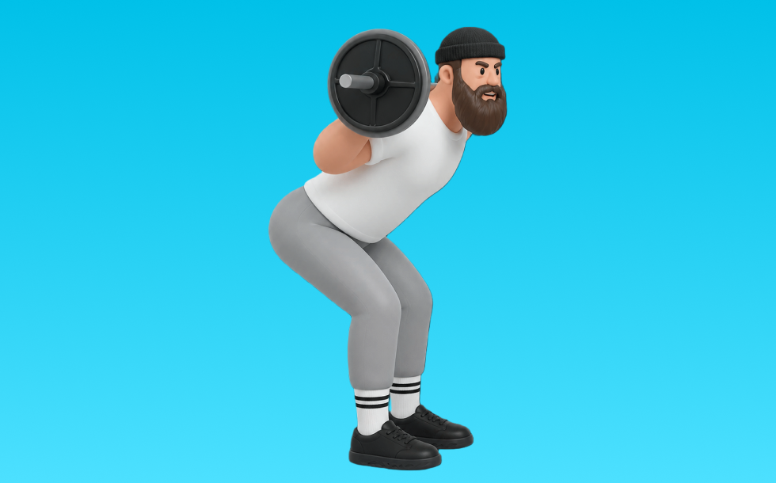

グッドモーニング

グッドモーニングとは、バーベルを使って「股関節で持ち上げる」動作で臀筋、ハムストリング、脊柱起立筋を鍛える種目です。高重量を扱いやすく、筋力を伸ばしやすいのが特徴で、反動を抑えてコントロールしながら反復します。下半身の筋力・筋量アップが期待できます。
- 対象部位
- 脚
- 器具
- バーベル
- 記録形式
- 重量・回数
- 別名
- GM
YouTube動画
-
グッドモーニングエクササイズ（Good Morning Exercise）のやり方とフォーム
-
【最強の筋トレ】腰痛を改善する『グッドモーニング』の正しいやり方
-
【グッドモーニング】腰痛を予防するために必要なトレーニングとストレッチ
-
【自宅で筋トレ】スッキリした裏もも・猫背の姿勢改善ならグッドモーニング！
-
グッドモーニングの正しいやり方 | ヒップアップとモモ裏を鍛えられる種目【ビーレジェンド プロテイン】
-
HOW TO DO THE GOOD MORNING EXERCISE: Build Your Glutes, Hamstrings And Squat With Perfect Technique
-
How To Perform Good Mornings (STEP BY STEP TUTORIAL)
-
【やり方】脚やせ二の腕やせグッドモーニング(女性限定無料ボディメイクコース基礎#2) | Muscle Watching
-
グッドモーニング｜How To Training
-
How to Do the Good Morning Exercise
-
【解説】お尻が先に浮くのを改善する【グッドモーニングスクワット】
-
グッドモーニングのやり方 背中の筋肉を鍛える - 筋トレ講座
-
【グッドモーニング 】太もも・脊柱起立筋・お尻を強化！脚やせ効果も期待！
-
How To Perform Good Mornings - Exercise Tutorial
-
背中の筋肉を鍛えるグッドモーニングエクササイズの実践
YouTubeショート
-
効率の良い下半身トレーニングはここから！グッドモーニング！
-
グッドモーニングエクササイズ／背筋／筋トレ実践講座
-
ハムと殿筋を追い込むグッドモーニング(バーベル版)【糸井トレーナー】 #ヒップアップ
-
Good Morning | No Equipment [How To]
-
Good Mornings Tutorial - Proper Form and Technique
-
こんなスクワットはやめましょう #フィットネス #筋トレ #スクワット
-
【背中トレ】グッドモーニングでキレイな背中になろう【キレイナデシコ Fitness】
-
グッドモーニングエクササイズヒップヒンジを習得
-
Mastering the Good Morning: Form Fixes for Stronger Hamstrings and Glutes
-
【脚が太くならないスクワットのやり方】 #脚痩せ #スクワット
-
これで簡単にできる！イスを使ってグッドモーニングエクササイズ
-
脚を細くするスクワットはこれ！お尻ともも裏鍛えれば、前ももがスッキリするよ
-
スクワットの正しいやり方【筋トレ】
-
【初心者に多い】スクワットでお尻が先に挙がる間違ったフォーム #筋トレ #グッドモーニング
-
How To Do A DUMBBELL GOOD MORNING | Exercise Demonstration Video and Guide
-
ハムと殿筋を追い込むグッドモーニング(スミスマシン版)【糸井トレーナー】
-
初心者必見🔰15秒でわかる！スミスマシーンde下半身トレーニング3選🦵
-
初心者🔰にはワイドスクワットがベスト！ #筋トレ #トレーニング #50代
-
グッドモーニング#筋トレ #パーソナル #ジム #姫路 #ダイエット #健康
-
【脊柱起立筋を鍛える！】グッドモーニング
-
猫背を卒業！有資格者が教えるオススメの対策筋トレ2選 #猫背 #姿勢リセット
-
ヒップアップから腰痛予防まで！グッドモーニングエクササイズ
-
筋トレすると、これだけ筋肉がつきます！#shorts
-
【ダンベル】背中トレ4選 #筋トレ
-
トレーニングの動き習得からヒップアップまで効果的！グッドモーニングエクササイズ
-
デッドリフトの正しいやり方 #フィットネス #筋トレ #デッドリフト
-
【湘南トレーニングハウス勉強会】両足グッドモーニング×ローテ
-
「1日4分、家で筋トレしてます」と聞いた時のトレーナーの反応#shorts
-
みなさんはスクワットどのようにされてますか？今回は持田選手がスクワットを伝授！次はどの種目の解説をやってほしいかコメントしてね！ #筋トレ #volix #トレーニング #ちょこっと惜しい
-
スクワットで身体の前傾が入る人にオススメの補助種目教えます！
-
トレーニングフォーム解説 #筋トレ #広背筋 #脊柱起立筋 #グッドモーニング #おはよう #挨拶は大事
-
正しいデッドリフト4つのポイント#筋トレ #デッドリフト
-
How To Do A Barbell Good Morning (Correct Form)
-
正しいルーマニアンデッドリフト4つのポイント #筋トレ
動作方法
- 背中を中立に保ち、股関節から動き始める
- もも裏の張りを感じる位置まで下ろす
- 足裏で床を押して立ち上がる
動作ポイント
- 背中を丸めない
- 膝を伸ばしきらない
- バーや重りを体から離しすぎない
ワンポイントアドバイス
- ウォームアップで股関節と足首を動かす
- 高重量の日はセーフティ設定を確認する
目的別回数設定
目的や体力に応じた一般的な目安です。無理のない範囲で調整してください。
- 筋力アップ
- 1〜5回
- 筋肥大
- 6〜12回
- 持久力アップ
- 13〜20回
YouTube動画について
動画はYouTubeの公開情報をもとに表示しています。内容は投稿者によるもので、Biggrによる監修ではありません。
アプリを入手
筋トレやトレーニングの記録はBiggrにお任せください。今すぐ無料で使い始められます。